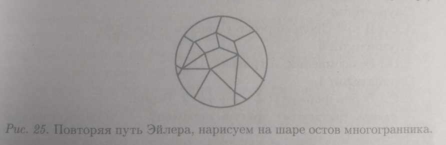

Наверное каждый из нас задумывался о том что все что видимо для нас (и невидимо) может быть математически доказано. К примеру возьмем футбольный мяч. Он состоит из 5-ти угольников и 6-ти угольников. Но кто кто из нас задумывался сколько нужно этих многоульников для правильного сшития мяча. Оказывается что для футбольного мяча нам потребуется : 12 - пятиугольников (не больше и не меньше); и любое количество - шестиугольников (хоть ноль). И теперь я перейду к интерестной части моего рассказа а именно доказательству этого факта через теорему под названием "Формула Эйлера для многогранников"
Однаджы математик Леонард Эйлер обнаружил следущий факт. Всем нам известно, что любой многогранник - это как бы изломанная поверхность шара. Эйлер нарисовал многогранник на шаре:спроецировал ребра и вершины многогранника,лежащего внутри шара,на поверхность шара.(Слово "Спроецировал" означает следующую процедуру: расположил внутри стеклянного шара макет многогранника,сделанный из проволочек и зажег в центре шара маленькую лампочку.На поверхности шара будут видны тени от ребер- это и есть проекции ребер.)
И с помощью этого приема доказал замечательную теорему с совершенной удивительной формулировкой.
Пусть у многогранника будет: В- количество вершин,Р- количество ребер,Г- количество граней.Эти количества можно непосредственно подсчитать,глядя на модель многогранника. Тогда обязательно будет:
В-Р+Г=2Независимо от того,какой мы возьмем многогранник.Теорема верна и для куба,и для тетраэдра, и для любого другого многогранника,имеющего границей "изломанную поверхность шара".Всегда это выражение будет равно 2
Рисуем на сфере картину футбольного мяча.Он должен состоять из шестиугольников и пятиугольных лоскутков.В любой вершине должны сходиться ровно 3 ребра. В остальном он может быть совершенно произвольным Итак чтобы воспользоваться формулой нам нужны вершины,ребра и грани.
Давайте обозначим за х - число шестиугольников, за y-число пятиугольников Тогда x+y будут равны числу гранямИтак теперь начнем определять число вершин. Вершину нашего шестиуголька будет ровна 6x. У пятиугольников - 5y.Записываем вот такую сумму 6x+5y.Но это еще не все. Так как у нас вершины совпадают (3 вершины). То есть нам нужно нашу сумму разделить на 3.
Тогда будут равны числу вершинамОпределяем число ребер. Ребру нашего шестиуголька будет ровна 6x. У пятиугольников - 5y.Записываем вот такую сумму 6x+5y.Но это еще не все. Так как у нас ребра совпадают (2 ребра). То есть нам нужно нашу сумму разделить на 2.
Тогда будут равны числу ребрам Теперь подставляем наши значения в данную формулу: В-Р+Г=2Цель формулы доказать, что y=12, давайте решать. 6x:3=2x;
6x:2=3x;
Умножим все уравнение на 6, чтобы избавиться от знаменателя. Умножим правую и левую часть и получаем :
10y-15y+6y=12. Отсюда следует что y=12
Ура мы доказали это. теперь по ссылке ниже на 3D модели вы можете убедиться(и даже посчитать) сколько всего этих пятиугольников
3D-модель мяча